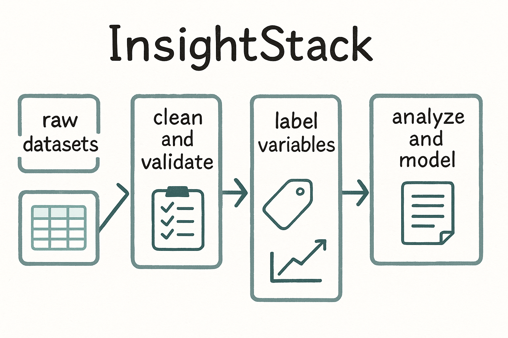

📁 Key Folders
📈 InsightStack Data Flow
This visual shows how tools in this repository connect across the data pipeline:

📑 Changelog
This site uses GitHub Actions to auto-update the changelog file.
A documentation-first knowledge repository for social impact research, MEL, and data tools.
This visual shows how tools in this repository connect across the data pipeline:

This site uses GitHub Actions to auto-update the changelog file.